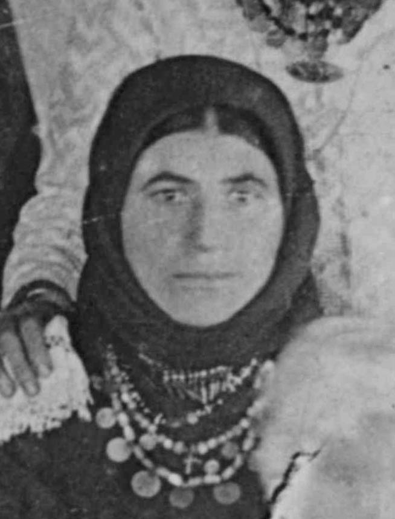
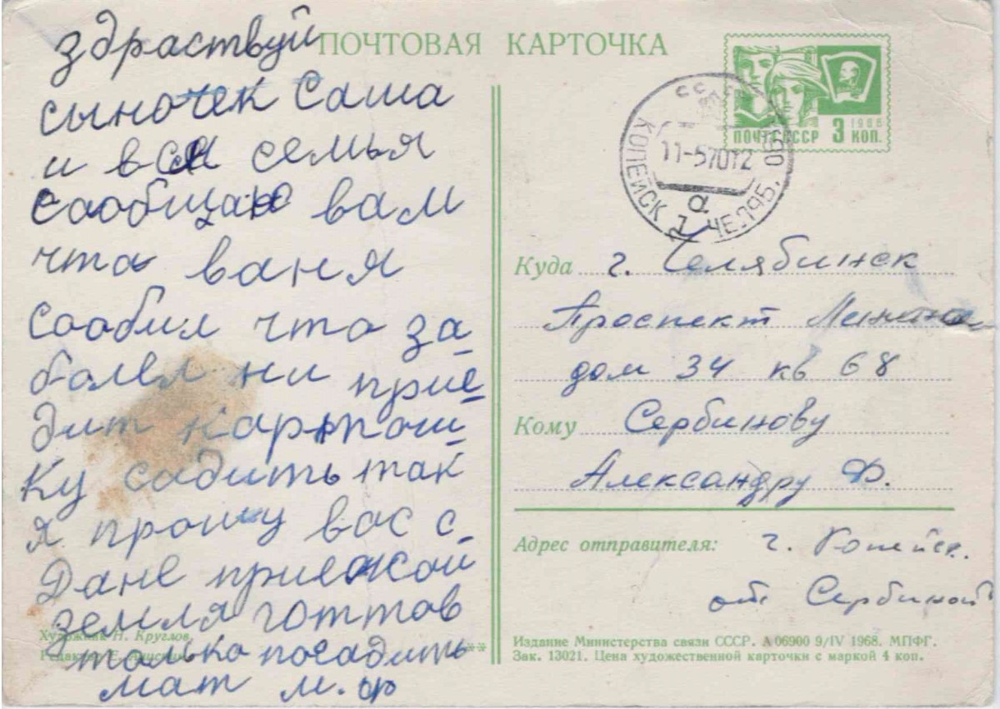

Сербинова (Плачкова) Мария Филипповна
Мария Филипповна (1895).
Родилась: 28.05.1895, с. Мануйловка
Умерла: 28.12.1975, г. Челябинск
Продолжительность жизни: 80
Место жительства: г. Копейск
https://www.familysearch.org/ark:/61903/3:1:3Q9M-CSSD-M9L3-4?i=345&cat=1044312
Отец: Плачков Трифонов Филипп Георгиев
Мать: Плачкова Трифонова (Вельчева) Александра Феодорова
Брат: Плачков Трифонов Даниил Филиппович
Брат: Плачков Евфимий Филиппович
Муж: Сербинов Федор Иванович
Сын: Сербинов Иван Федорович
Сын: Сербинов Степан Федорович
Дочь: Сербинова Елена Федоровна
Сын: Сербинов Дмитрий Федорович
Сын: Сербинов Даниил Федорович
Сын: Сербинов Александр Федорович
 Семья Сербинова Ивана Федоровича 1873 г.р.: около 1929, с. Зеленое (с. Зеленовка). Рукой Сербинова Александра Федоровича на обороте: Семья Сербинова Ивана Федоровича 1873 г.р.: около 1929, с. Зеленое (с. Зеленовка). Рукой Сербинова Александра Федоровича на обороте:1. Иван Федорович (дедушка) 1870-1932 2. Василий Иванович (дядя) 3. Степанида Ивановна (бабушка) 1870-1932 3. Евдокия (тетя жена В.И.) 5. Мама 1895-1975 29/12/75 6. Надежда Федоровна (сестра) 7. Отец (1895-1965) 28/10/65.  Семья Сербинова Федора Ивановича: 27.12.1940, г. Копейск. Рукой Сербинова Ивана Федоровича на обороте: Семья Сербинова Федора Ивановича: 27.12.1940, г. Копейск. Рукой Сербинова Ивана Федоровича на обороте:Фотография 27/12/40 г. Копейск шахта № 205 Семейная карточка 1. Сербинов Ф.И. 2. Сербинова М.Ф. 3. Сербинов И.Ф. 4. Сербинов Д.Ф. 5. Сербинов А.Ф. Окрытка от Сербиновой М.Ф: 11.05.1970, г. Копейск. |